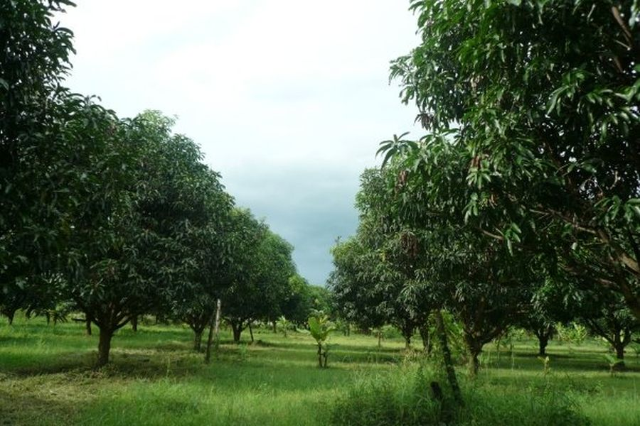

A block is the area you manage as one thing. It carries the crop, the plan and the person responsible, and it is the unit every index number is reported against. The farm gives you the outline. Blocks are what you work with.
Farm manager, tenant admin
10 minutes for a few blocks, an hour for a large farm
6 steps
Written from the product's own screen text and the code behind it. The screenshots and the clip come next, once a farm exists on the recording account.
Step by step
B-12. Name is optional, for example North strip.Blocks may not overlap. If two blocks share ground, every number for that ground is counted twice, in both blocks.
P-3. Click Create pivot.This is a different thing from the grid inside a block. Auto-block grid creates blocks. The sub-block grid divides one block into cells for within-block detail, and it is set per farm.
Reference
| Field | Required | What it is for |
|---|---|---|
| Boundary | yes | Drawn on the map, or one polygon per block in an uploaded file. |
| Code | yes | Short identifier, for example B-12 or P-3. Must be unique on the farm. |
| Name | no | Readable name, for example North strip. |
| Sectors | pivot only | Equal slices of the circle. Presets 1, 4, 6, 8, 12, or type a number. |
| Cell size in metres | auto-grid only | The size of each candidate square before you pick which to keep. |
| What you see | What it means |
|---|---|
| Could not create, check the code is unique | Another block on this farm already uses that code. |
| Code is required | The Create button stays disabled until the code has something in it. |
| Outside Egypt | An uploaded polygon falls outside the country bounds. The file is in the wrong coordinate system, or the wrong file. |
| No polygon found | The file has no polygon in it. A points-only KML will not do. |
| Unsupported file type | Use .geojson, .json, .kml, or a shapefile inside a .zip. A bare .shp is missing its sidecar files. |
| Duplicate code in upload | Two rows in the same upload carry the same code. Codes must be unique within the batch as well as on the farm. |
| Replace not confirmed | A row would replace an existing block. Tick the confirmation, or change the code so it creates a new block instead. |
Support
Three channels beside the documentation. All three pages are placeholders for now and will be designed next.